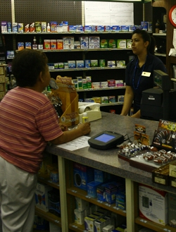

Big State Drugs was established in 1948 when the B&H Dry Goods Store was sold to Clay and Jean Burney. Downtown Irving, especially establishments off Main St. were very popular during that time period. Big State Drug boasted a soda fountain, jukebox, banana splits, sundaes and air conditioning (a luxury at the time) and was a popular hang-out for high school students. In 1992, Brian and Stacy Smith took over the operation, keeping the drug store/soda fountain atmosphere that made the establishment such a popular attraction mid-century. Big State celebrated its 50th anniversary with a street celebration, including a nine-piece Dixieland Band, in the summer of 1998. Today Big State Drug is widely respected as one of only two fully operational Soda Fountains in Dallas county. Historically, Big State Drugs is located on what was originally developed by Charles Stovall for his Banner Mercantile store, a large frame building at the time. Circa 1914 C.T. Lucas, a former employee, turned renter, turned owner, moved the frame store located at the corner of First and Main. He built the permanent brick building in its place where Big State currently resides. Mr. Lucas also used the vacant land just south of the building as a poultry farm. He owned and operated the Banner Merchantile until the early 1930's.
